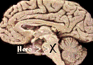

My brainI have an inoperable brain tumor, diagnosed in Feb 94. It's paralysed the left side of my body and right side of my face. This image shows where the bastard is ... in the pons or brainstem. This chronology of my tumor tells a lot. The Net's been an impressive tool in fighting this and finding help. The Brain Tumor Library is a good source of info. The BRAINTMR mailing list is like a global support group for people with brain tumors, their families, friends and medical practioners. It helped me a lot. My familyName: David Watts, age: 45, married to Chris with a 14-year-old girl Alana and 11-year-old boy Rory and a Cavalier King Charles Spaniel named Gizmo (and some budgies). Other things I'm a journalist at |